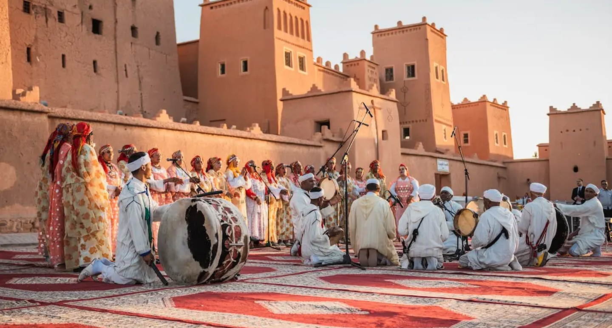
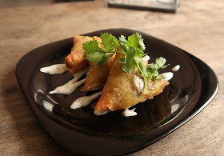
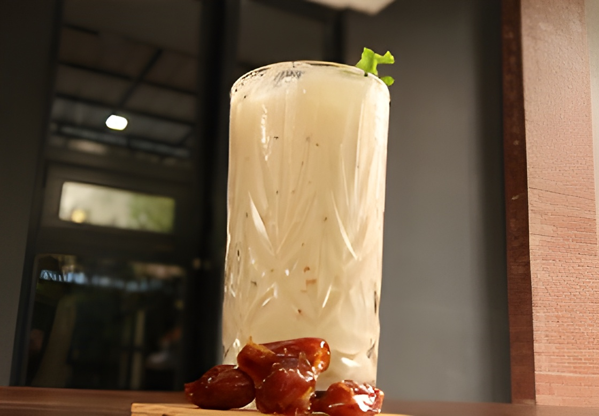
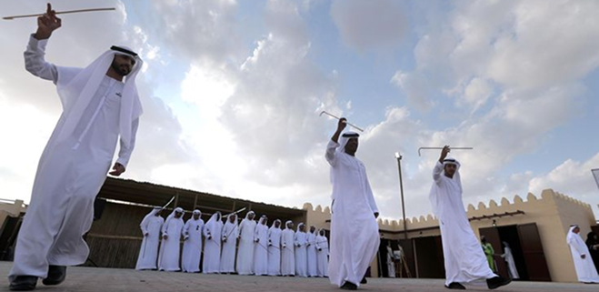
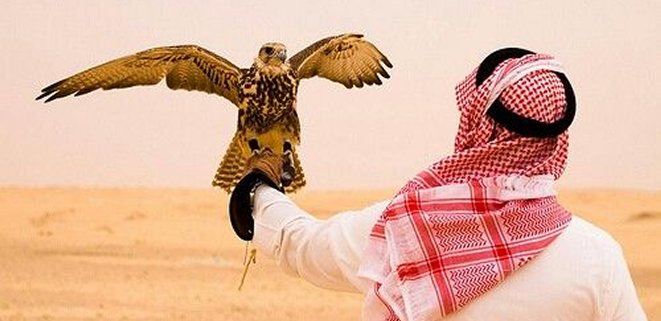
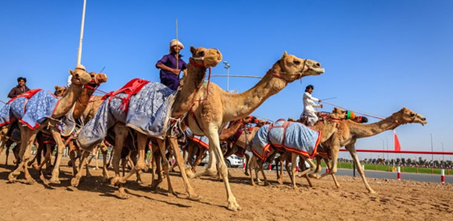
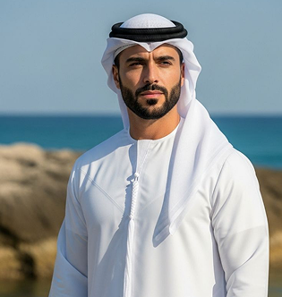
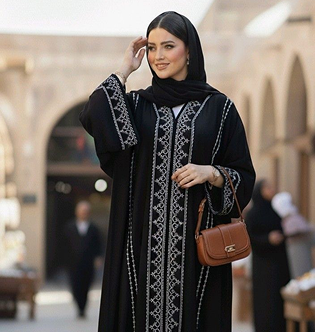

AL-AYALA
Al Ayala is a traditional dance performed by two rows of men holding thin sticks. It is usually performed during national celebrations, weddings, and important cultural events.


A traditional Middle Eastern snack shaped like a triangle, similar to a samosa, and very popular in Gulf countries such as the United Arab Emirates, Saudi Arabia, and Kuwait. This dish is made from thin pastry sheets filled with various ingredients, such as seasoned minced meat, chicken, cheese, or vegetables. It is then folded into a triangle shape and deep-fried until crispy.
READ NOW
A traditional chicken and rice dish originating from the Arabian Gulf region and considered one of the national foods of the United Arab Emirates. This dish developed from ancient spice trade routes that connected the Middle East with India and Persia, creating a unique blend of basmati rice, chicken, and aromatic spices such as cardamom....
READ NOW
A traditional drink made from fermented milk that is popular in the Middle East. Generally, Laban with dates has a savory or slightly salty taste with a refreshing sour flavor from the yogurt. However, when dates are added, it gains a third flavor—sweetness—which makes the drink even more refreshing and energizing.
READ NOW
Al Ayala is a traditional dance performed by two rows of men holding thin sticks. It is usually performed during national celebrations, weddings, and important cultural events.

Falconry is the traditional practice of hunting with falcons. It has been part of Emirati culture for centuries and symbolizes pride, honor, and heritage.

Camel racing is a popular traditional sport in the UAE. It reflects the desert lifestyle and cultural heritage of the Emirati people.

Kandura is the traditional long white robe worn by men in the UAE. It is designed to be comfortable in the hot desert climate. Emirati men usually wear the kandura with a head covering called the Ghutra, which is held in place with a black cord called the Agal.

Abaya is a traditional black cloak worn by many women in the UAE. It is usually worn over regular clothing when going outside the home. The abaya represents modesty and is an important part of Emirati culture. Some abayas are simple, while others are decorated with embroidery or elegant designs.